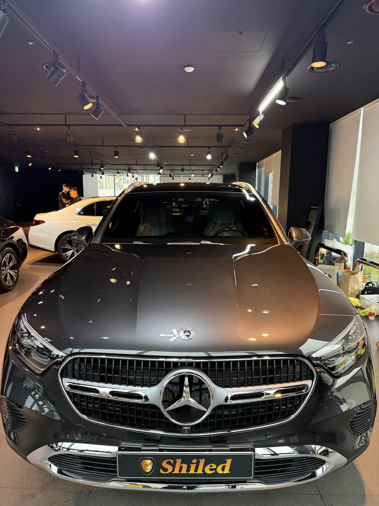
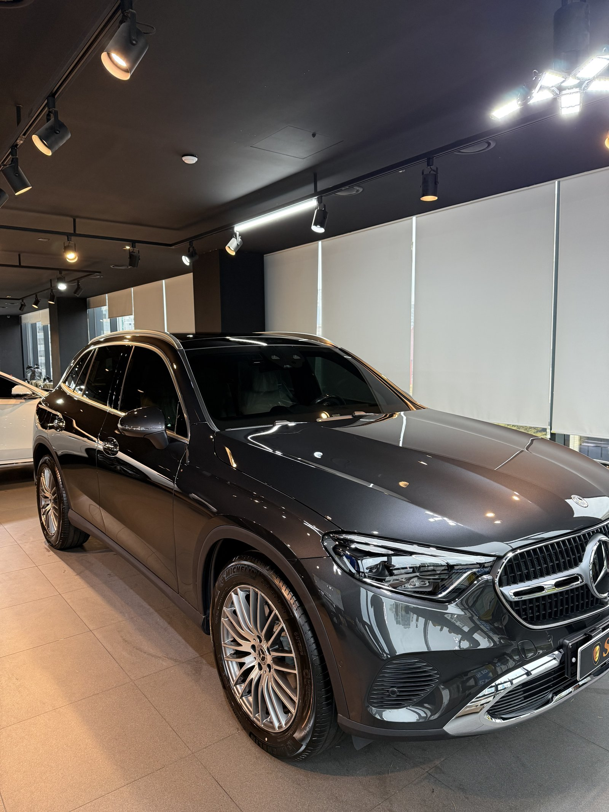
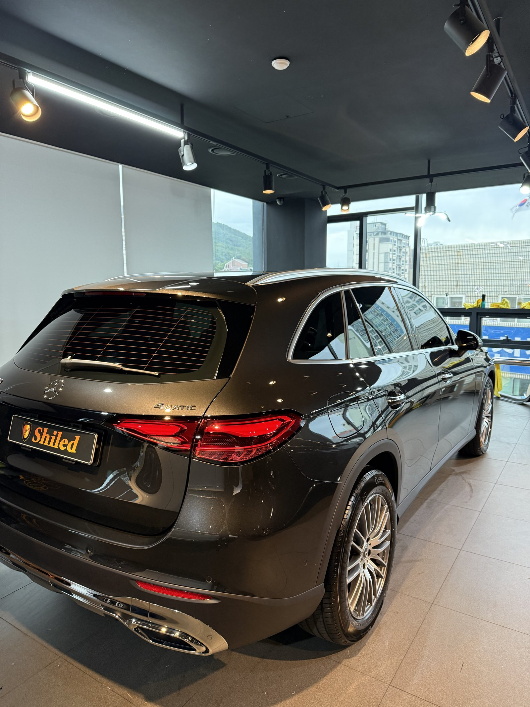
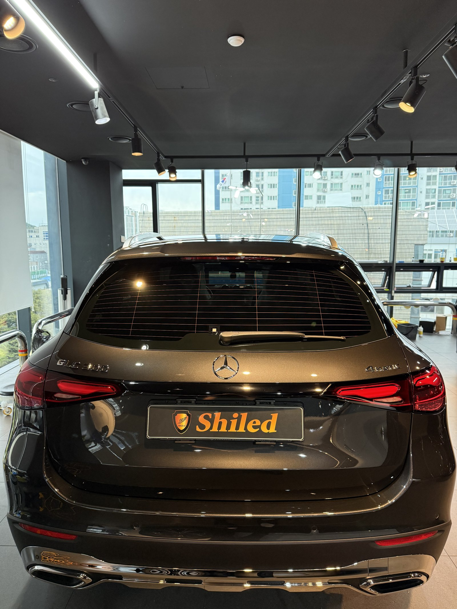
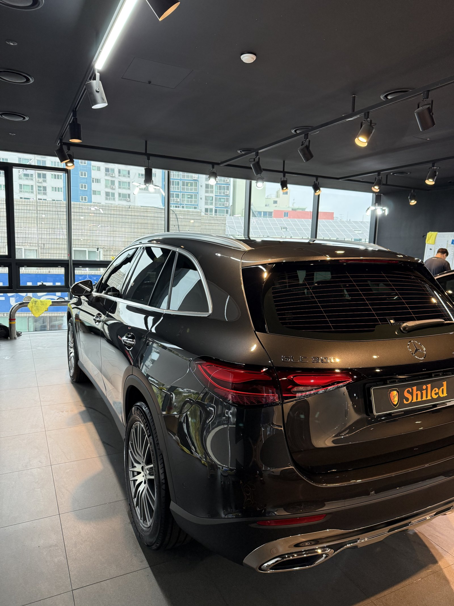
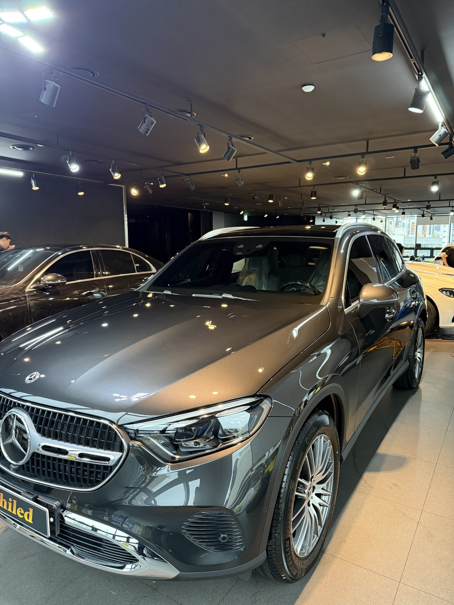
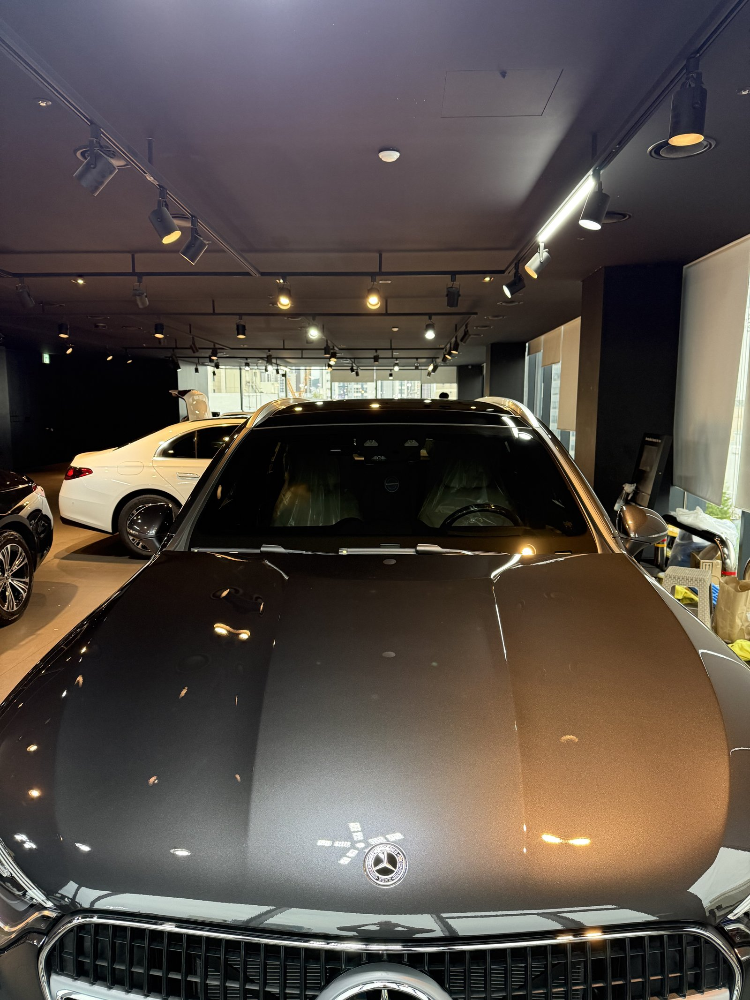
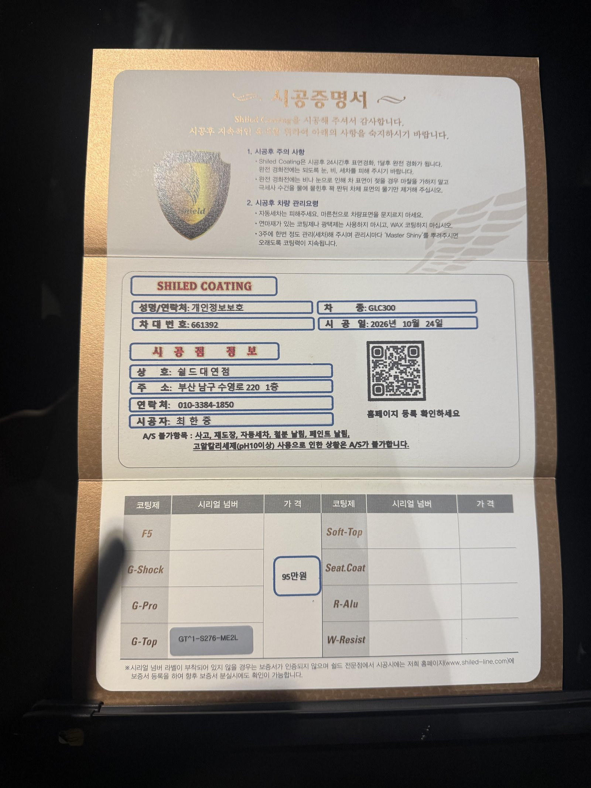

벤츠 GLC300, 짙은 그라파이트 그레이 신차입니다.
F5가 많은 GLC300 중에서 이번에는 G-TOP을 골랐습니다.
발수를 우선한 부산 유리막코팅 기록입니다.

짙은 그레이는 어떤 빛에서 확인하나요?
창가 자연광과 천장 조명을 번갈아 봅니다.
그라파이트 그레이는 빛에 따라 검정처럼도, 회색처럼도 보입니다.
보닛 굴곡을 따라 조명 줄이 끊기지 않는지 확인했습니다.
창 쪽으로 뒤를 돌려 테일게이트 면도 따로 봤습니다.



SUV 뒤쪽은 왜 더 신경 쓰나요?
SUV 테일게이트는 주행 중 와류로 먼지와 물이 가장 많이 붙는 면입니다.
리어 와이퍼 아래와 번호판 주변에 물때가 잘 고입니다.
이 자리에 발수 코팅이 있으면 비 온 뒤 차이가 바로 보입니다.



기술자의 팁
G-TOP은 물방울이 동그랗게 맺혀 굴러떨어집니다. 비 온 뒤 테일게이트에 물자국이 덜 남는지 한번 비교해 보십시오.
GLC300에 G-TOP을 올린 이유
G-TOP은 발수와 방오성에 특화된 코팅입니다.
짙은 그레이는 물자국이 하얗게 남으면 눈에 잘 띕니다.
세차 횟수를 줄이고 관리를 편하게 하시려면 G-TOP이 맞습니다.
코팅제는 대표가 직접 개발·제조한 제품입니다.
이번 부산 유리막코팅은 G-TOP 싱글로 진행했습니다.
시공증명서도 함께 드립니다
모든 시공 차량에 시공증명서를 드립니다.
차종·시공일·코팅제 시리얼 번호가 적혀 있고, 홈페이지에 등록해 보증을 받으실 수 있습니다.

차종·시공일·코팅제 시리얼이 기재된 시공증명서
자주 묻는 질문
Q. GLC300은 F5가 많던데 G-TOP은 어떤 분께 맞나요?
A. 색감보다 발수와 관리 편의를 우선하시는 분께 맞습니다. 비 온 뒤 물자국과 오염이 덜 남습니다.
Q. G-TOP과 F5는 무엇이 다른가요?
A. F5는 색감과 글로시함에 특화되어 있고 G-TOP은 발수·방오성에 특화되어 있습니다. 차 색상과 관리 습관에 맞춰 고릅니다.
Q. SUV 테일게이트가 유독 빨리 더러워지는 이유는요?
A. 주행 중 뒤쪽에 생기는 와류가 먼지와 물방울을 끌어당깁니다. 발수 코팅이 있으면 오염이 덜 붙습니다.
Q. 왜 출고 전에 코팅하나요?
A. 도장면이 가장 깨끗할 때 올린 코팅이 가장 오래갑니다. 운행과 세차로 잔기스가 생기기 전에 입혀두는 것이 핵심입니다.
Q. 쉴드광택 위치와 예약은 어떻게 하나요?
A. 부산 남구 유엔로220 1F 쉴드광택입니다. 예약·상담은 010-3384-1850, 대표 최한중이 직접 상담하고 책임 시공합니다.
새 차일수록 시작점이 다릅니다. 가장 깨끗할 때 입혀두십시오.
제품을 직접 만드는 사람이 직접 시공합니다.
부산에서 신차 유리막코팅을 고민 중이시면 편하게 연락 주십시오.
어떤 차를 타냐보다 어떻게 타냐가 중요합니다~!
시공 중에는 전화를 받지 못할 때가 많습니다.
카카오톡으로 차종과 원하시는 시공을 남겨주시면 확인 후 답변드립니다.
쉴드광택 · 부산 남구 유엔로220 1F · 대표 최한중